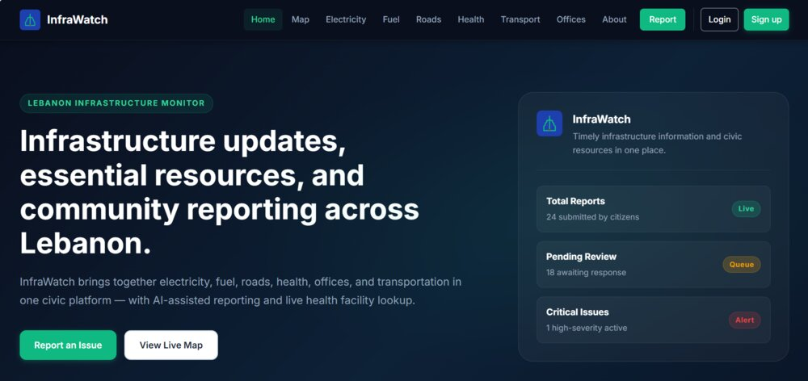
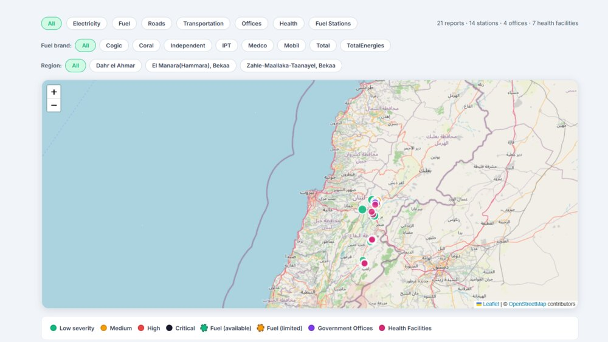
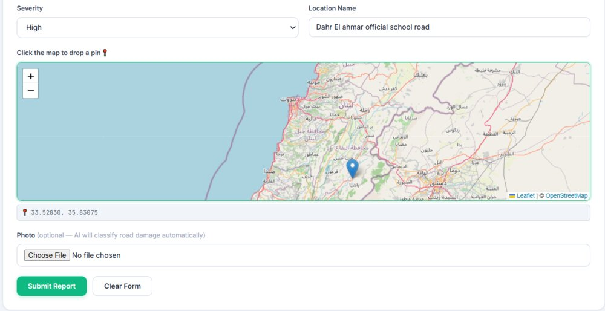
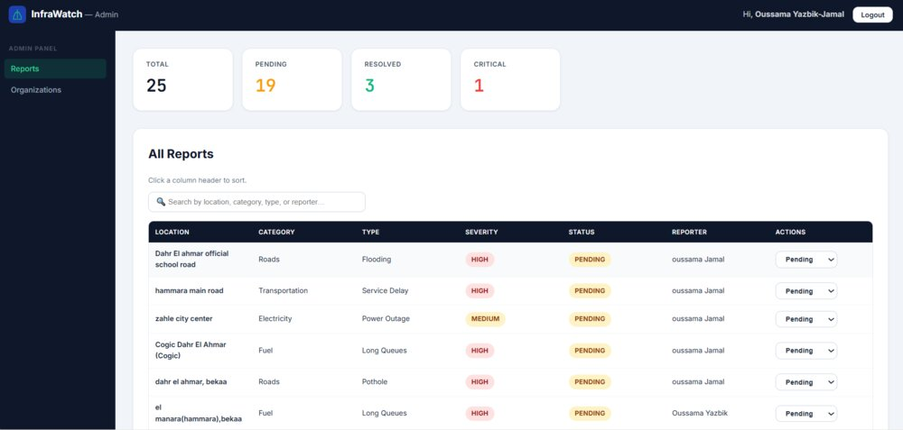

Computer Science graduate who builds systems that turn ambiguous input — a citizen's freeform report, a raw Arabic word — into structured, explainable output. Two projects below, one shared instinct: never guess silently.
01Take messy real-world input — freeform text, unvowelled Arabic — and impose real structure on it.
02Prefer explainable rules over black boxes; use ML only where rules genuinely run out.
03Never let automation have the final word — a human can always override it.
Selected Work
Two systems, one instinct
A full-stack civic platform that leans on fine-tuned pretrained models, and an NLP pipeline built from first principles with no pretrained model in its core. Different tools, same underlying discipline.
InfraWatchSenior Project · Full-Stack + Applied ML
A civic infrastructure reporting platform for Lebanon that shifts data ownership from one central authority to the municipalities themselves. Citizens report problems across six categories, assisted by AI severity suggestion, image classification, and location extraction — while final judgment always stays with a human. Validated end-to-end across three real demonstration regions. View on GitHub →
Four distinct roles — Citizen, Org Staff, Org Lead, Admin — with jurisdiction-scoped data ownership, not a single flat permission model.
Three ML components integrated into a working product: multilingual urgency classification, fine-tuned road-damage image classification (~0.78 macro F1 on RDD2022), and hybrid gazetteer + NER location extraction across Arabic, English, and French.
Diagnosed multiple real failure modes in an early jurisdiction-matching system and unified the fix into one shared resolution function, reused identically on both the citizen and organization side.
Conservative three-signal duplicate-report detection, and a fail-soft AI layer — every automated suggestion stays fully overridable.

Home — category overview, signed-out and signed-in views

Live Map — active reports and infrastructure, plotted geographically

Report submission — AI severity suggestion, always citizen-editable

Admin — platform-wide report visibility across all regions
An Arabic NLP pipeline built from first principles — normalization, tokenization, morphological analysis, lemmatization, root extraction, POS tagging, and full syntactic parsing. No pretrained model sits in the core pipeline: the system reasons about Arabic's root-and-pattern morphology directly, and only reaches for a small trained classifier when its own rules run out. Try it live above — every word you type runs the real rule-based analyzer in your browser. View on GitHub →
Extracts Arabic's non-concatenative root-and-pattern morphology by converting words to consonant/vowel structural templates and matching against 10+ known verb-form and participle patterns.
Handles what most NLP tooling skips: broken (irregular) plural lemmatization, pronoun-clitic stripping, and prefix/suffix disambiguation.
A hybrid rule + ML POS tagger falls back to a trained classifier only when the rule-based tagger is genuinely uncertain — and explains its own reasoning for every decision.
Parses both valid Arabic word orders — VSO and SVO — into correctly structured NLTK constituency trees (NP / VP / PP).
Pattern
Structure
Identifies
فاعل
CVCVC
Active participle
مفعول
CCVCVC
Passive participle
استفعل
VCCCVCC
Form X verb
تفاعل
CVCVCC
Form VI verb
فعيل
CVCVC
Adjective-like noun
A sample of the ~11 morphological templates the analyzer matches against — Arabic derives meaning from consonant-vowel patterns layered onto a root, not just concatenated affixes.
Toolkit
Technical skills
Languages
JavaScriptPythonSQLHTML/CSS
Frontend
ReactReact RouterReact-Leaflet
Backend
Node.jsExpressREST API designJWT Auth
Database
PostgreSQLSupabase
ML / NLP
Hugging Face TransformersCNN fine-tuningscikit-learnNLTKPyArabicArabic computational morphology